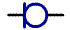
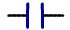
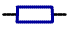
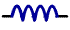
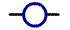

Потоковые схемы (электрические схемы замещения) ориентированы на предметную область, связь между подсистемами которой осуществляется потоком неких носителей, а в узлах схемы выполняются условия баланса потоковых переменных. Наиболее характерный пример – электрические и гидравлические системы. Потоковые схемы оказываются полезными и при моделировании ряда экономических и производственных систем.
В соответствии с общей методикой построения классов моделей зададим предъявлением два типа переменных: типа U – разностные и типа i – потоковые, а также параметры типов L, R, C, A. В качестве элементарных неопределяемых отношений будем использовать обычные математические операции.
На этой основе определим набор базовых элементов, каждый из которых задается тройкой переменных Ui, Uj, i, связанных математическими операциями. В таблице приведены символьные обозначения элементов и их математическое описание. Там же показано графическое изображение на схемах.
| Тип элемента | Уравнение | Графический знак | Описание | Параметр | |
| 1 | E | u=f(t) |  | Источник напряжения | f(t) - функция, задающая величину напряжения |
| 2 | C |  | Конденсатор | C - емкость конденсатора | |
| 3 | R |  | Резистор | R - сопротивление резистора | |
| 4 | L |  | Катушка индуктивности | L - индуктивность катушки | |
| 5 | I | i=f(t) |  | Источник тока | f(t) - функция, задающая силу тока |
Далее введем отношение полюсной связи. Полюсная связь определяется отношением вида: ik=ij. Ею могут быть соединены элементы, когда их потоковые переменные равны. Отдельные элементы могут соединяться между собой, образуя сети. Элементы потоковой схемы образуют полюсные сети; все элементы полюсной сети связаны полюсными связями. Правила композиции для полюсных сетей имеют вид:
Основная область применения потоковых схем – моделирование электрических и гидравлических цепей и систем. Именно в них перенос энергии осуществляется потоками, а в узлах, как следствие закона сохранения материи, сумма потоковых переменных равна нулю.
Прежде всего обратим внимание на особенности электрических схем и их соотношение с потоковыми. Электрические схемы как язык многозначны. Один и тот же графический символ может означать и конструктив (индуктивность, емкость и т.д.), и физическое понятие и, наконец, математическую модель элемента – уравнение определенного вида. В определенной ситуации модель той же емкости сама может быть схемой из нескольких элементов. При этом выбор переменных фиксирован: потоковая переменная – ток, разностная – напряжение.
Потоковая схема – математическая структура, переменные и параметры которой не содержат никакого физического смысла. При построении схемы как модели в ее переменные и параметры может вкладываться различный физический смысл. И только в частном (правда, часто встречающемся) случае электрическая (если считать ее математической моделью) и потоковая схемы полностью совпадают; различие - в используемых графических знаках и символах. Поэтому там, где это не вызовет недоразумения, с электрической схемой можно обращаться как с потоковой.